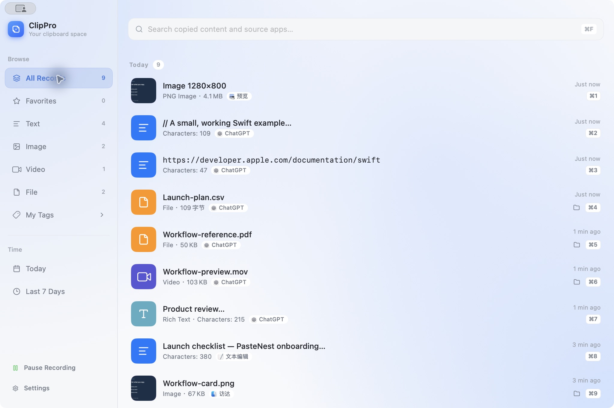
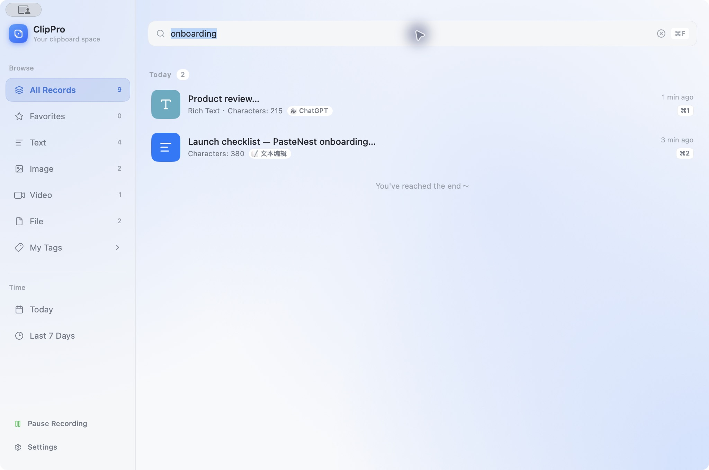
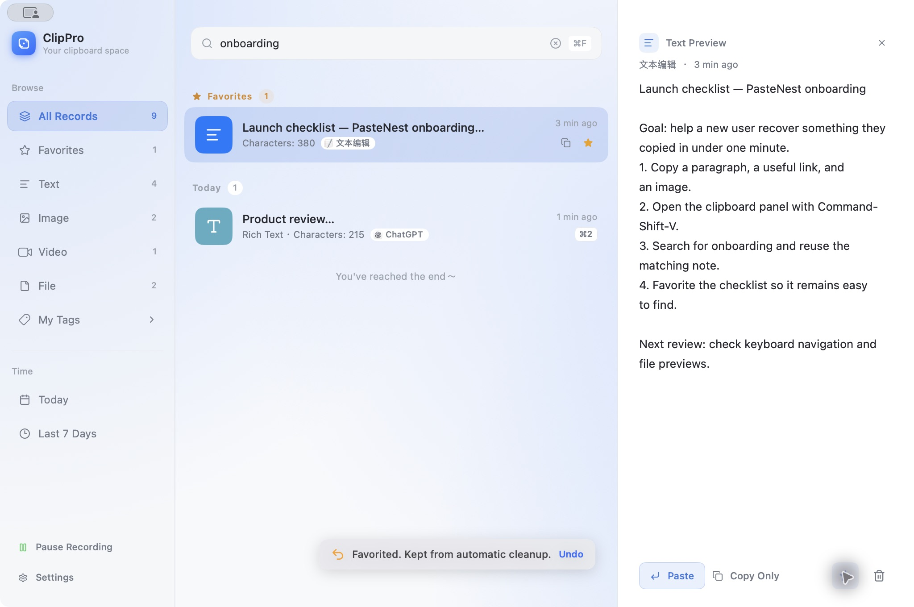
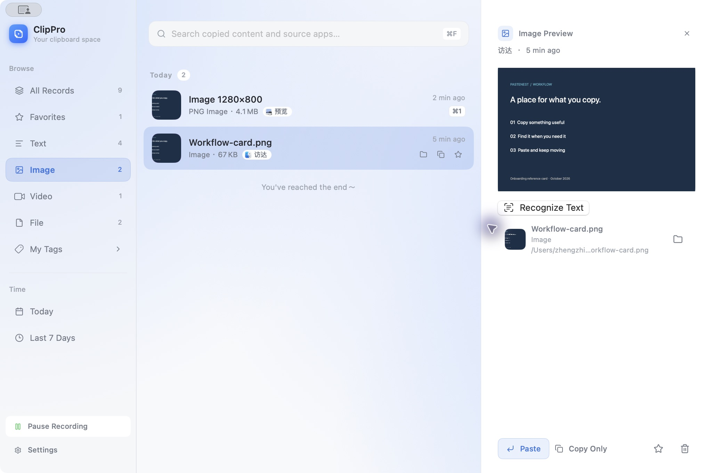
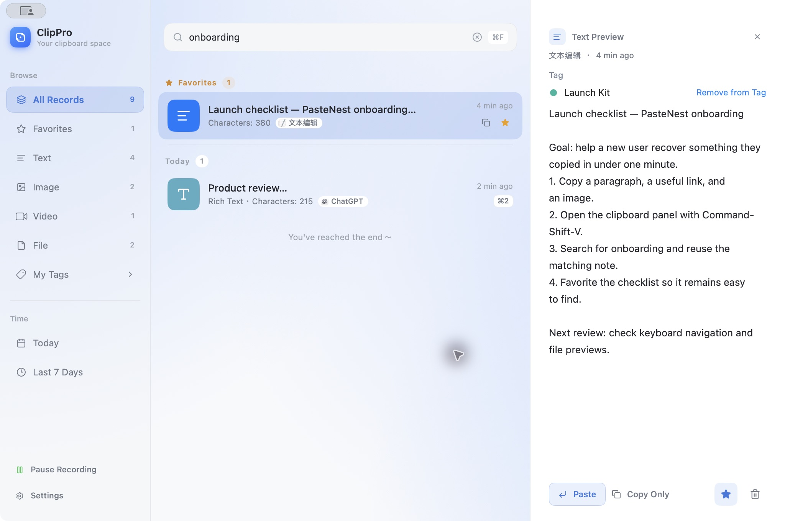
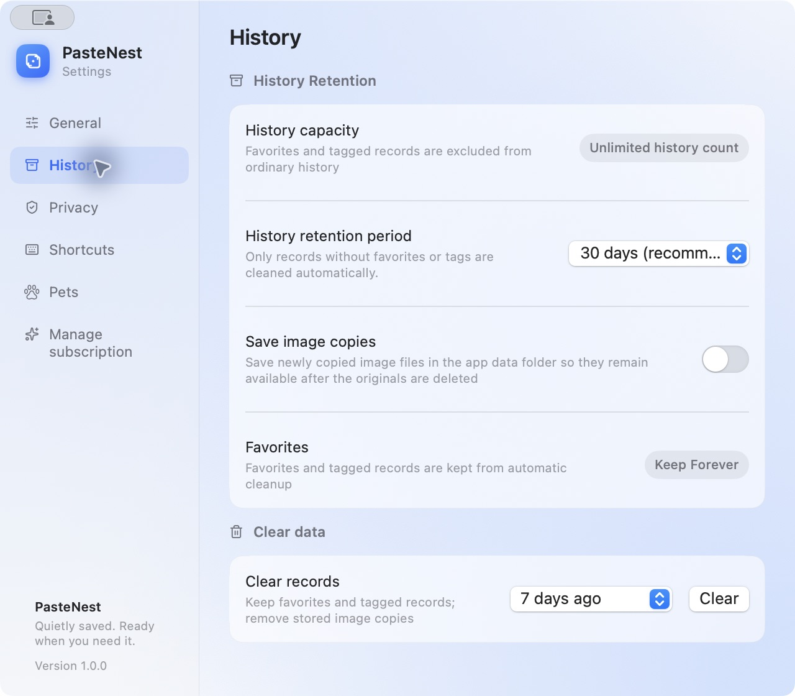

PasteNest 入门指南
复制过的内容，需要时随手找回。
本页目录
一分钟完成第一次使用 浏览你复制过的内容 将记录粘贴到其他应用 搜索和筛选历史 先预览，再使用 用收藏和标签整理常用内容 设置保留时间和图片副本 暂停记录与隐私 按你的习惯调整 免费版与 Pro 常见问题PasteNest 是一款 Mac 剪贴板管理工具。它在后台记录你复制的文本、链接、图片、富文本和文件，让你在复制新内容后，仍能找回之前的内容。你可以继续使用熟悉的 ⌘C 和 ⌘V，只在需要找回旧内容时打开 PasteNest。
一分钟完成第一次使用
- 启动 PasteNest，在菜单栏找到应用图标。
- 在文档或网页里复制一句话，再复制另一段内容。
- 按 ⌘⇧V 打开快捷面板，找到第一次复制的那句话。也可以左键点击菜单栏图标打开面板。
- 先切换到需要粘贴的应用，将光标放到输入位置，再打开面板、选中记录，按 Return 粘贴。
- 把经常使用的内容加入收藏，下次从「收藏」中快速找到。
如果暂时不使用直接粘贴，可以在记录的右键菜单选择「复制」，或在预览中点击「仅复制」，然后切换到目标应用按 ⌘V。
以后想再次阅读本指南，右键点击菜单栏图标，选择「帮助 → 入门指南」。
打开完整历史：右键点击菜单栏图标，选择「查看全部记录」。快捷面板适合随手取用，完整历史窗口适合搜索、预览和整理。
浏览你复制过的内容
历史窗口显示内容摘要、来源应用和复制时间。普通记录按时间排列，收藏内容会在「全部记录」中单独分组。左侧可以切换「文本」「图片」「视频」「文件」和「收藏」。


截图使用英文界面。当前历史窗口中的 PasteNest 与本文的 PasteNest 指同一款应用。
| 你复制的内容 | 在哪里找 | 使用提示 |
|---|---|---|
| 文字、代码、网页链接 | 文本 | 链接和代码属于文本，无需寻找独立的链接分类 |
| 带字体、颜色等格式的内容 | 文本 | 列表会标识为富文本（Rich Text） |
| 直接复制的图像、访达中的图片文件 | 图片 | 图片像素与图片文件都可以进入图片分类 |
| 访达中的视频文件 | 视频 | 视频是复制的文件，不是自动录制的屏幕内容 |
| PDF、CSV 等其他文件 | 文件 | 可以查看文件信息，或打开所在文件夹 |
快捷面板中的卡片可横向滚动。在「设置 → 常规」中，可以选择显示最近 10、20、50 条，或滚动加载更多，并选择紧凑或铺满屏幕的宽度。这些选项控制面板展示，不会改变历史保留额度。
将记录粘贴到其他应用
在目标应用里点击输入位置，然后打开 PasteNest，选中内容并执行「粘贴」。快捷面板中可以按 Return，也可以用卡片显示的 ⌘1–⌘9 快速取用对应记录。
直接粘贴需要 macOS 的辅助功能权限。出现权限提示时，在「系统设置 → 隐私与安全性 → 辅助功能」中允许 PasteNest，然后回到目标应用重试。记录功能和「仅复制」不依赖这项直接粘贴权限。
如果目标应用没有接收内容，使用「仅复制」再手动按 ⌘V。图片和文件是否能插入，取决于目标应用支持的内容类型；例如，普通文本输入框通常不能接收图片。
搜索和筛选历史
打开历史窗口，点击搜索框或按 ⌘F，输入记得的词语，也可以搜索来源应用名称。例如，输入 onboarding 可以找回相关清单和评审笔记。


如果记得内容类型，先点击左侧的「文本」「图片」「视频」或「文件」缩小范围。也可以使用「今天」「最近 7 天」查找近期记录，或进入某个标签查找对应项目的资料。清空搜索框即可恢复当前分类的列表。
先预览，再使用
在记录的右键菜单选择「预览」，查看完整内容。文本可以在详情中阅读和选择；图片会显示图像预览。详情底部提供「粘贴」「仅复制」、收藏和删除操作。


在快捷面板中，将焦点移到记录后，按 空格或 ⌘I 可切换预览。搜索框有焦点时，空格用于输入搜索文字；先按 Tab 将焦点移到记录。
从图片中提取文字
打开图片预览，点击「识别文字」（Recognize Text），即可识别图中的文字，再复制识别结果。发起新的图片文字识别需要 Pro。


如果图片文件的预览不可用，且界面提示「授权预览」，按提示选择对应原图片。文件被移动或删除也可能影响使用；收藏记录不会自动备份所有原文件。
用收藏和标签整理常用内容
收藏适合随时要用的内容，例如邮件回复、工作清单和代码片段。点击记录或预览中的星标，之后从左侧「收藏」中访问。收藏及带标签的记录不会被自动清理。
标签适合围绕项目整理资料。例如，把上线清单、参考图片和文档放入 Launch Kit：
- 右键点击记录，选择「添加到标签」。
- 选择已有标签，或点击「新建标签并添加…」。
- 输入名称、选择颜色，确认创建。
- 从「我的标签」进入相应标签查看资料；在「管理标签…」中修改名称和颜色。


一条记录可以关联多个标签。取消收藏或移除最后一个标签后，记录会重新受历史保留规则管理；若操作会导致清理，注意界面的影响提示。
设置保留时间和图片副本
打开「设置 → 记录」，根据需要选择 7 天、30 天、90 天、1 年或不自动清理。新安装默认 30 天。缩短保留时间可能清理旧记录，确认前先查看影响提示。


截图为 Pro 界面，显示「不限条数」。免费版普通历史保留最近 20 条。
「不自动清理」关闭按时间清理；免费版仍受最近 20 条普通历史的数量限制。收藏和带标签的记录不计入普通历史，也不会被自动清理。
如果希望复制的图片文件在原文件删除后仍可使用，可开启「保存图片副本」。该选项作用于新复制的图片文件，不会为所有已有记录或其他类型文件自动建立备份。
需要释放空间时，在「清理记录」中选择范围，再点击「清理」。此操作会保留收藏和带标签的记录，删除符合范围的普通记录及应用保存的相关副本，原文件不会被删除。
暂停记录与隐私
剪贴板内容保存在本机，PasteNest 不上传剪贴板内容，也不需要账号。
复制不想保留的内容前，点击历史窗口左下角的「暂停记录」，或在菜单栏右键菜单中选择暂停。菜单栏提供定时暂停和手动暂停；使用后选择恢复记录。暂停期间新复制的内容不会进入历史，但已有记录仍按保留规则管理。
按你的习惯调整
在「设置 → 常规」中选择界面语言、浅色或深色外观，并管理开机启动。在「设置 → 快捷键」中更改唤出面板的组合；如果新组合已被占用，应用会提示并保留原快捷键。
在「设置 → 宠物」中可以开启桌面宠物。默认关闭，免费版可使用机器人，Pro 可使用完整宠物库。它是可选的桌面入口，不影响日常复制和查找流程。
| 快捷键 | 作用范围与操作 |
|---|---|
| ⌘⇧V | 默认全局快捷键，打开或关闭快捷面板；可在设置中修改 |
| ⌘F | 聚焦搜索 |
| ← / → | 快捷面板中移动记录选择，搜索框未聚焦时生效 |
| Tab / ⇧Tab | 快捷面板中切换记录与搜索焦点 |
| Return | 快捷面板中粘贴选中的记录 |
| ⌘1–⌘9 | 快捷面板中取用对应编号的记录 |
| 空格 / ⌘I | 快捷面板中切换所选记录的预览 |
| ⌘P | 快捷面板中收藏或取消收藏所选记录 |
| ⌘⇧H | 快捷面板中打开完整历史窗口 |
| Esc | 快捷面板中依次关闭预览、清除搜索、收起搜索或关闭面板 |
免费版与 Pro
免费版可以完成复制、查找、预览和整理的基本流程。需要更多保留空间或图片文字识别时，可以在「管理订阅」中查看 Pro。
| 功能 | 免费版 | Pro |
|---|---|---|
| 普通历史 | 最近 20 条 | 不限条数 |
| 自动清理时间 | 自行选择 | 自行选择 |
| 收藏 | 20 条 | 不限 |
| 标签 | 3 个 | 不限 |
| 带标签的不同记录 | 50 条 | 不限 |
| 新图片文字识别 | 需要 Pro | 支持 |
| 桌面宠物 | 机器人 | 完整宠物库 |
如果已经购买但权益未显示，可在订阅界面恢复购买。升级不会恢复已经清理的内容。
常见问题
按快捷键没有反应？ 先确认 PasteNest 正在运行，再从菜单栏打开。进入「设置 → 快捷键」查看当前组合，确认没有被其他应用占用。
复制的内容没有出现？ 确认记录未暂停。PasteNest 记录运行期间发生的复制操作，不会补回启动前的全部剪贴板历史。
找不到一条旧记录？ 清空搜索并返回「全部记录」，再检查分类、标签和时间筛选。普通记录也可能因保留时间或免费版容量限制被清理；经常使用的内容建议收藏或添加标签。
文件还在列表里，却打不开？ 文件记录可能依赖原路径和访问权限。确认原文件仍在，按界面提示授权；图片文件可以提前开启「保存图片副本」。
需要帮助？
遇到问题时，可以从应用菜单栏的「帮助 → 问题反馈」联系我们，也可以发送邮件。请描述操作步骤、预期结果与实际现象。